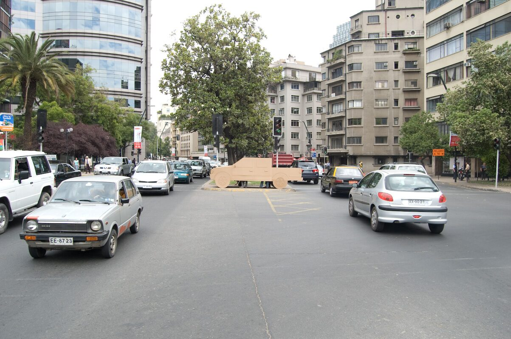
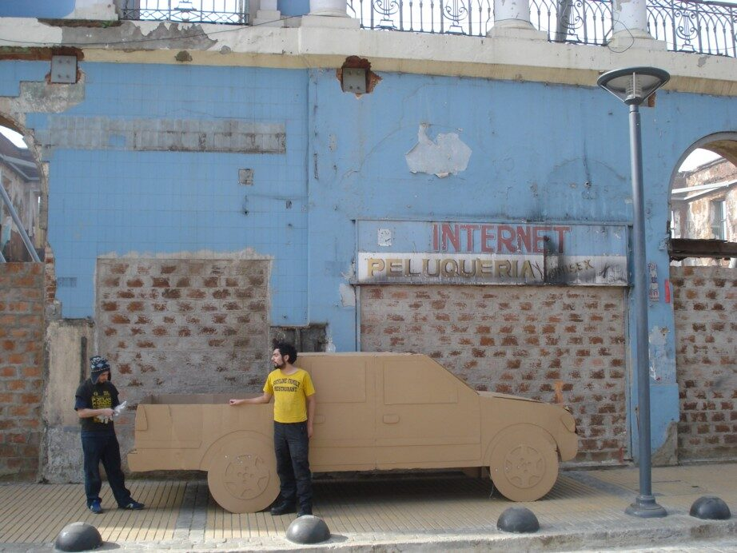
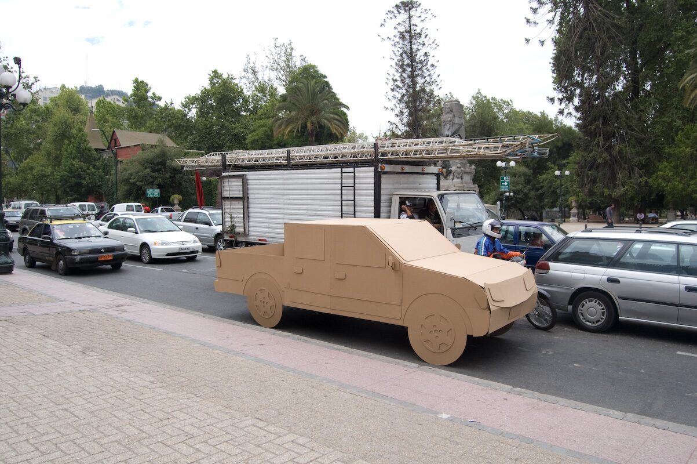

Dossier · Pieza de Cartón
Pieza de Cartón / LUV, Paseo a la Capital
Construcción de una camioneta doble cabina de cartón corrugado, modelo Chevrolet LUV (Light Utility Vehicle), hecha para ser ocupada y estacionada en diversas locaciones urbanas.
Cuatro paradas
La camioneta de cartón recorrió y se estacionó en la zona de la explosión de calle Serrano, en Valparaíso; en la Plaza Echaurren, Valparaíso; en el Museo Nacional de Bellas Artes, Santiago; y en Parque Arauco, Santiago — un mismo objeto doméstico y frágil, repetido en el espacio institucional, comercial y de calle.



UbicaciónREGIÓN METROPOLITANA
33°26′S · 70°39′O